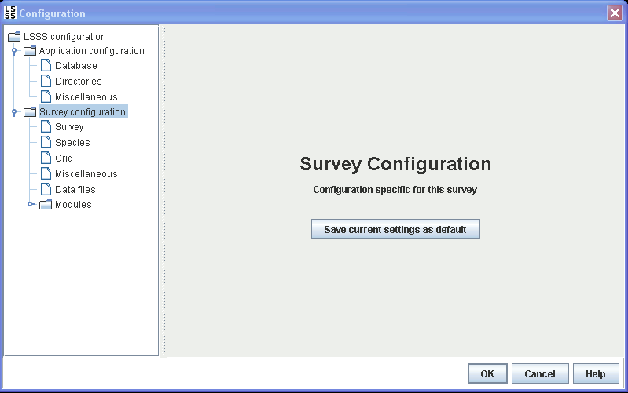

The configuration for each survey is stored in a separate file with extension lsss. The location of this file is selected when setting up a new survey.
From the main tab for the survey configuration, the current settings can also be saved as default settings.